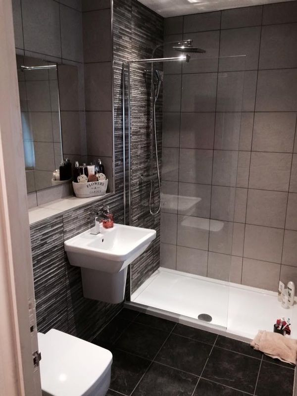

Our specialism
Luxury bathrooms, en-suites & wet rooms
Full design-and-fit projects, from stripping out the old room to the last bead of silicone.
- Strip-out, new pipework and first fix
- Electricians, plasterers and tilers organised for you
- Walk-in showers, wet rooms and built-in baths
- Underfloor heating and towel radiators
